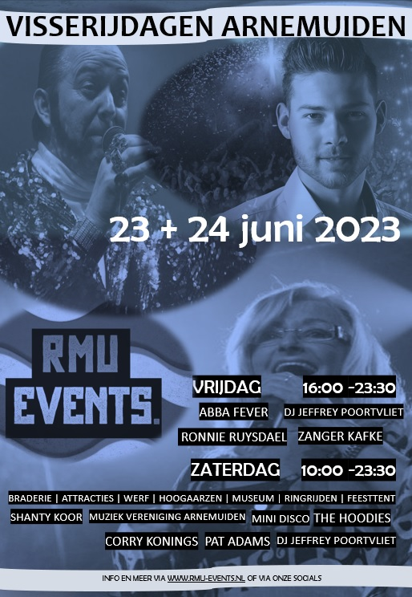
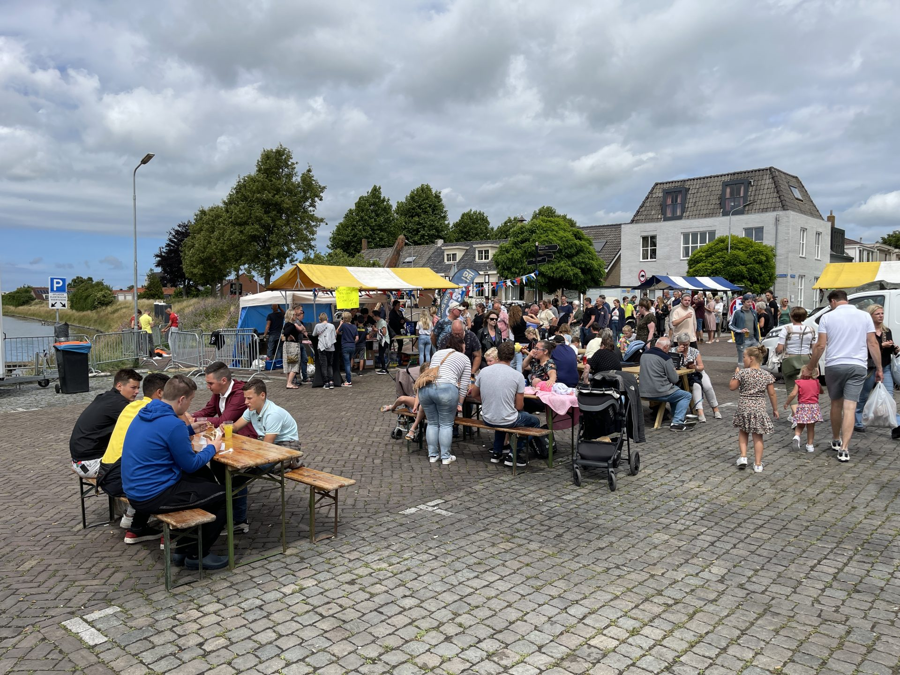
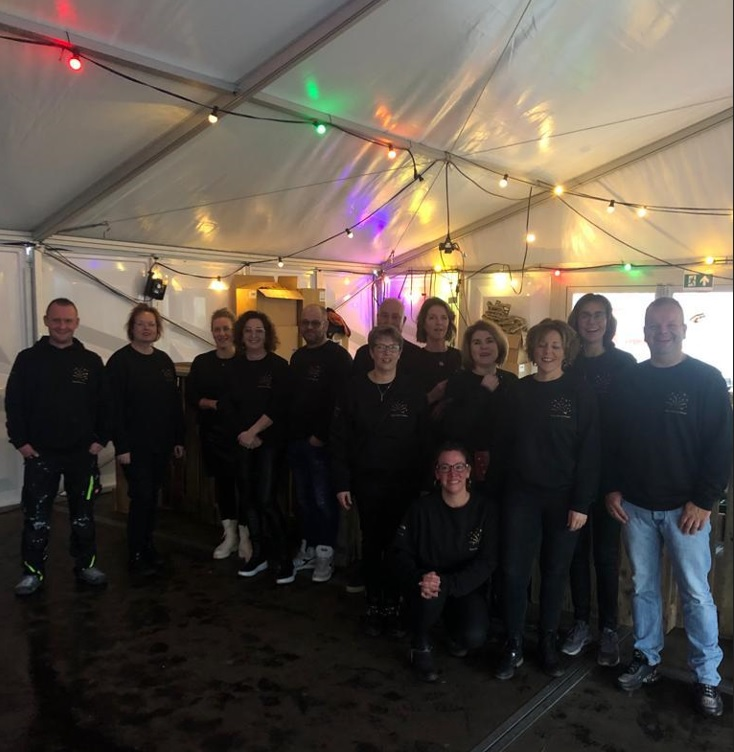
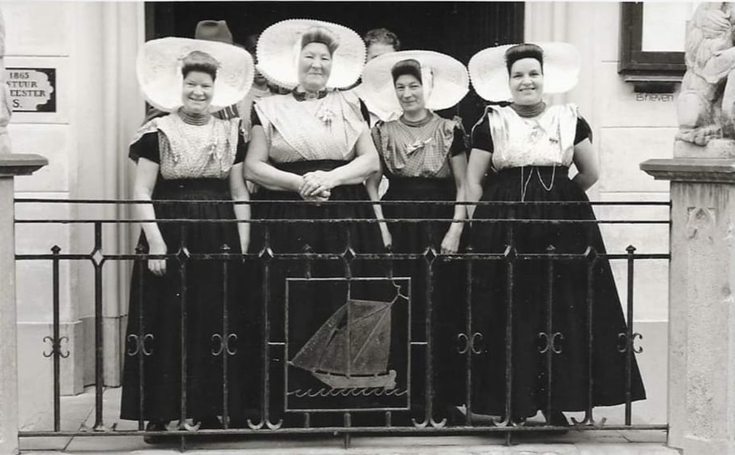
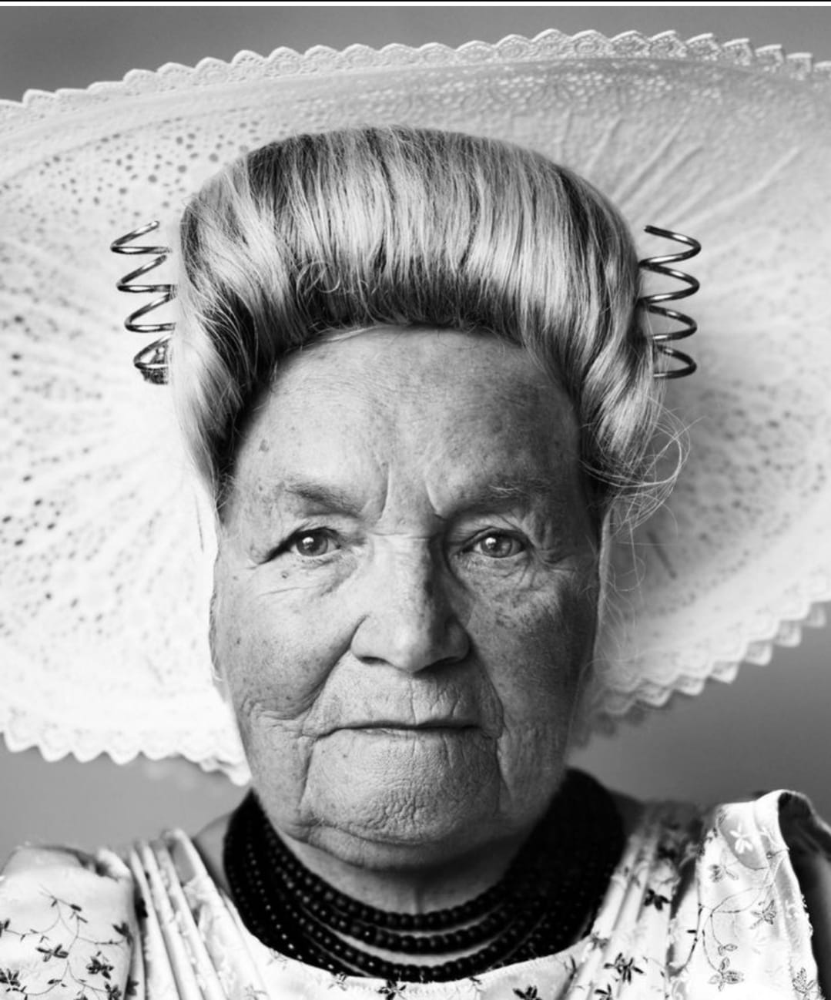
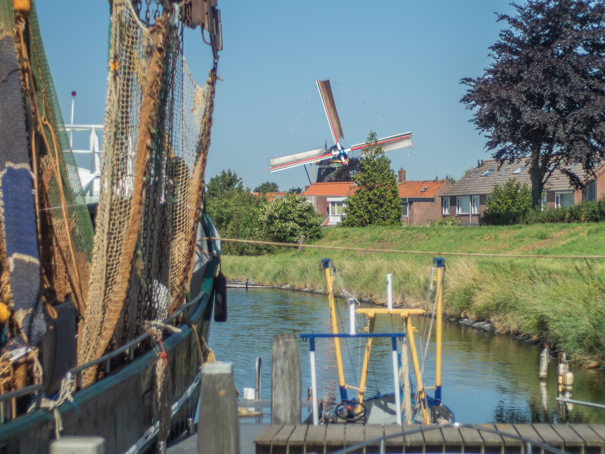

Expositie & Diverse stands
Op zaterdag 20 mei 2023 tussen 11.00 - 16.00 uur organiseert stichting RMU Events een expositie met diverse stands met als thema: ''Arnemuiden in oude foto's.
Tot dan!
Programma Visserijdagen 2023
Het programma tijdens Visserijdagen.

Aanmelding voor Braderie
Dit jaar organiseert stichting RMU Events de jaarlijks terugkerende Visserijdag/Arnemuidsedag in Arnemuiden op zaterdag 24 juni a.s.
Net als voorgaande jaren worden er weer vele activiteiten gepland en worden jullie uitgenodigd om deze Visserijdag tot een geslaagde dag te maken.
Tijdens visserijdag is er een feesttent, ringrijden, kermis, kinderattracties, hoogaarzen, toegang tot de werf, het museum én een grote braderie in de kern van ons mooie dorp.
De braderie commissie van stichting RMU events wordt vanaf heden gecoordineerd door Mirjam van Belzen en Esther Siereveld. Voorheen door Corrina Bezemer en José Poortvliet.
Indien u een kraam wilt, kunt u zich inschrijven door een mail te sturen naar braderie.events.rmu@gmail.com
De braderie duurt van 10.00 uur tot 16.00 uur. Bij aanmelding graag vermelden of u elektriciteit nodig heeft. Zo ja, welk apparaat hierop moet worden aangesloten. Wilt u er een haspel bij huren, dan zijn er extra kosten van € 5,-.
Een grondplek per kraam is 4 beter breed en je kunt natuurlijk meerdere plekken krijgen. Iedereen krijgt n.a.v. een bevestiging ook een routebeschrijving en een kraamnummer toegewezen.
Meer info? Stuur een e-mail naar braderie.events.rmu@gmail.com t.a.v. Mirjam van Belzen.
Tot dan!

Activiteit: Erremuu Telt Af 2022
De afgelopen tijd heeft Stichting RMU Events diverse gesprekken met de Gemeente Middelburg gevoerd voor een veilig oudjaar in Arnemuiden. Dankzij het initiatief van een aantal moeders is er voor jong en oud een feesttent neergezet. Chapeau voor deze moeders! Stichting RMU events heeft e.a. hierin gefaciliteerd en geadviseerd. Daarnaast willen wij de Gemeente Middelburg en Stichting Welzijn Middelburg voor de financiering bedanken.

Arnemuiden in oude foto's
Stichting RMU Events beheert de facebook pagina 'Arnemuiden in oude foto's. Arnemuiden heeft een rijke geschiedenis, met zijn visserij , klederdracht en familiebanden. De facebook pagina heeft inmiddels meer dan 1000 leden en wordt gebruikt om de geschiedenis van Arnemuiden met elkaar te delen. Hierin wordt nauw samengewerkt met 'Arneklanken'.

Behouden van Arnemuidse klederdracht
Tegenwoordig wordt streekdracht nauwelijks meer gedragen. Toch is Arnemuiden nog één van de plaatsen waar de dracht nog door een aantal vrouwen wordt gedragen. Ook in het Museum van Arnemuiden deelt men graag de historie over de Arnemuidse dracht.
Stichting RMU Events vindt het belangrijk om de Arnemuidse dracht in ere te houden en om deze dracht toekomstig bestendig te maken. Om die reden zullen wij workshops organiseren, zodat de kennis over het aankleden van de dracht behouden blijft voor toekomstige generaties.
Stichting RMU Events heeft de afgelopen tijd veel kleding ontvangen en verwacht de komende tijd nog meer dracht. De afgelopen tijd zijn wij met Museum Arnemuiden en Atelier Jaffari een samenwerking gestart, zodat op termijn bij Museum Arnemuiden de nodige workshops gehouden kunnen worden.
Desondanks staan wij nog wel voor een uitdaging.
Op dit moment hebben wij onvoldoende opslag om alle (toekomstige) ontvangen en verzamelde kleding op te slaan.
Daarnaast bestaat er, afhankelijk van het succes van de workshops, de kans om zelf ook nieuwe kleding te maken.
Een oproep aan iedereen: Wie weet of heeft ruimte beschikbaar waar wij deze kleding kwijt kunnen? Denk aan een depot o.i.d
Alvast bedankt voor jullie hulp en het met meedenken hierin!
Opgeven voor de workshop kan nog altijd door een bericht te sturen naar +31682791115 en hierbij je naam door te geven.

Volg ons ook via onze social media kanalen!

Over ons
De stichting RMU Events is opgericht op 1 november 2019. Als stichting staat het behouden van de sociale culturele identiteit in Arnemuiden centraal en willen wij ons mooie dorp als 'karakteristieke vissersplaats' naar de toekomst toe behouden.
.
Meer over ons
Verbinding & Initiatieven
Stichting RMU events heeft verbinding in het dorp hoog op de agenda staan.
Samen met u staan wij voor een erremuu waarin alle ‘erremuunaers’ zich zelf thuis
kunnen voelen.
Bent u benieuwd wat stichting RMU Events voor uw vereniging, stichting of initiatief/idee in
Arnemuiden kan betekenen? Neem gerust contact op met één van onze bestuursleden of stuur een
e-mail naar events.rmu@gmail.com